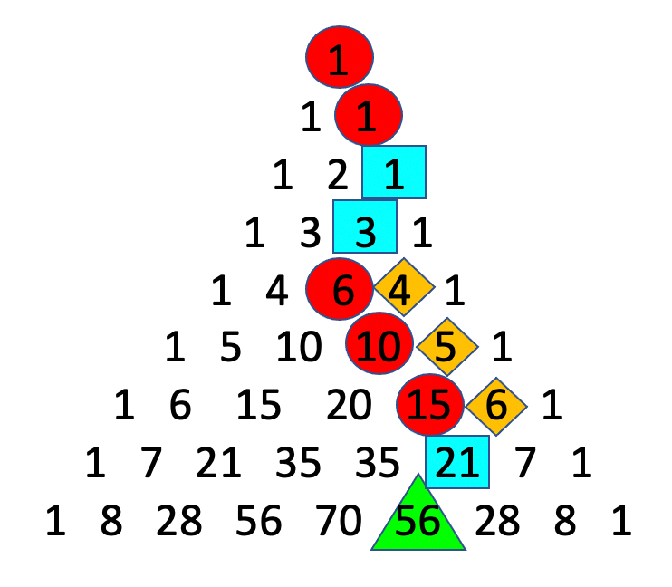

My work in steganography concerns methods of transmitting quantum and classical information which renders that information indistinguishable from noise one might expect to occur naturally in the channel of transmission, where the indistinguishability is with respect to metrics such as fidelity. Depending on the channel, type of state used to transmit information, and measurement capability, this can involve a wide range of encoding strategies and corrective protocols. The image at the right displays a particular encoding scheme for Fock states involving a combinatoric encoding that can be visualized using Pascal's triangle - which also demonstrates the linear complexity of encoding and decoding. This work is geared toward optical media and CV protocols and in the future we expect to have practical results stemming from our collaboration with another group at USC.
